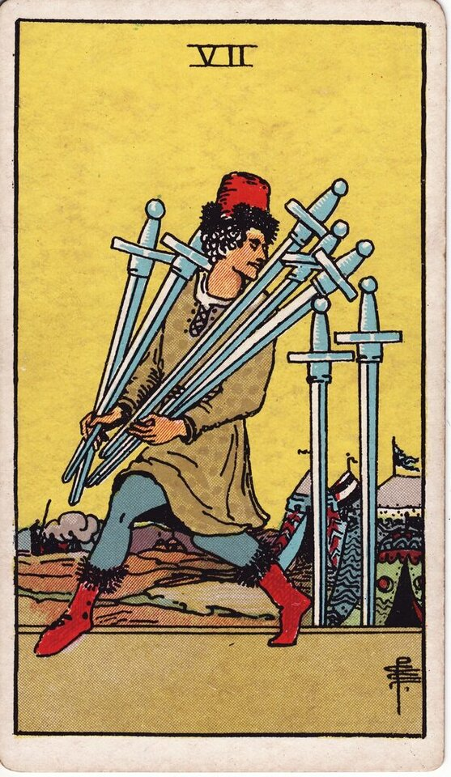

Minor Arcana · Suit of Swords
Seven of Swords Tarot Card Meaning
The Seven of Swords is the quiet getaway — deception, strategy, secrecy, acting alone. Want to know what it means in your spread? Every reader on our line is hand-vetted — connect in under 60 seconds, $1 for your first minute, hang up anytime.
- Hand-vetted readers
- Available 24/7
- Hang up anytime

Seven of Swords — What It Shows
A figure tiptoes away from a camp carrying five swords, leaving two behind, glancing back with a sly smile. He thinks he's unseen. After the transition of the Six, the Seven is cleverness without full honesty: a plan executed quietly, a corner cut, a truth withheld. It can be cunning strategy or outright deception — and crucially, he left two swords behind, so the scheme is rarely as clean as it looks.
Seven of Swords Upright Meaning
Upright, the Seven of Swords is deception, stealth, and strategy. Getting away with something, secrecy, working around the rules, acting alone, or being clever rather than straightforward. It isn't always "bad" — sometimes it's necessary discretion or smart tactics — but it always asks: who's being kept in the dark, and is that wise? Its core note is something isn't fully above board.
Seven of Swords Reversed Meaning
Reversed, the truth surfaces. Coming clean, a conscience kicking in, getting caught, returning what was taken, or finally being honest. It can also be a deception unravelling — yours or someone else's.
Seven of Swords in Love & Relationships
In love, the Seven of Swords can flag secrecy, a half-truth, or someone not being fully open — or a guarded, strategic approach to a connection. Example: a caller with a "something's off" feeling drew this card; the read named possible withheld honesty while cautioning against leaping to betrayal — the card is about hidden information, and the next step is an honest conversation, not an accusation.
Seven of Swords in Career & Money
For work it's strategy, discretion, working solo, or — at the shadow end — cutting corners, office politics, or someone being deceptive. Example: someone sensing they were being undercut at work pulled this card; the message advised documenting, watching, and protecting their position rather than confronting blindly.
Seven of Swords as Advice
As advice: be honest, or be strategic with integrity. If you're cutting a corner, ask what it really costs; if someone else is, gather facts before you act, and bring things into the open.
Seven of Swords Reversed in Love & Career
Reversed, this card deserves a closer look by area. In love, the hopeful read is honesty returning — a confession, coming clean, secrets ending; the harder read is a deception exposed, or guilt finally surfacing. In career, reversed it's being caught, owning a mistake, or a scheme falling apart. The reversed Seven's question is whether the truth is coming out by choice or by exposure. A live reader can help you read whose secret it is and what's surfacing.
What People Ask About the Seven of Swords
The questions readers hear most about this card:
"Does it mean cheating or lying?"
It can flag deception, but it's "something hidden" — confirm with surrounding cards before assuming.
"Seven of Swords as feelings?"
Guarded, evasive, not fully open — strategic rather than warm.
"Is someone betraying me?"
Possibly hidden information; investigate calmly rather than conclude.
"Should I keep my plans quiet?"
Sometimes the card advises discretion — context decides.
Seven of Swords — Yes or No?
Leans no, or "not honestly." Reversed can shift toward yes as the truth comes out.
Seven of Swords Timing in a Reading
Timing is the least precise thing tarot does, so treat this as a lean, not a date. As an air-suit seven, readers usually place it in the near term — days to a couple of weeks, often as something hidden coming to a head. Reversed signals exposure or honesty is imminent. A live reader reads timing from the full spread and your question far more reliably than the card alone.
Seven of Swords Card Combinations
Context changes everything — a few pairings readers see often:
Seven of Swords + The Moon
Deception and illusion — very little is as presented.
Seven of Swords + Justice
A deception meeting consequences or being held to account.
Seven of Swords + Ace of Swords
The truth cutting through a cover-up.
Seven of Swords in a Tarot Reading
A meanings page is the map; a live reading is the territory. The Seven of Swords shifts with its position and the cards around it — which is what a hand-vetted reader interprets for your question. See the full Suit of Swords, all 56 cards on the Minor Arcana hub, or start a phone tarot reading.
← Six of Swords · Next: Eight of Swords →
What Does the Seven of Swords Mean for You?
A meanings list is the map; a live reading is the territory. We'll connect you with the right hand-vetted tarot reader in under 60 seconds. $1/min first call · 15 minutes for $10 · hang up anytime · 100% satisfaction promise.
Call (888) 920-6662 NowSeven of Swords — Frequently Asked Questions
What does the Seven of Swords mean?
Deception, stealth, and strategy — getting away with something or acting alone.
What does it mean reversed?
Coming clean, conscience, getting caught, or finally being honest.
What does the Seven of Swords mean in love?
It can warn of secrecy or half-truths — or a guarded, strategic approach.
Is it a yes or no card?
Leans no, or "not honestly"; reversed can move toward yes.
How much does a reading cost?
First-time callers pay $1/min, or 15 minutes for $10, and you can hang up anytime.
Get Your Tarot Reading Now
Connected to a hand-vetted reader in under 60 seconds, the cards pulled on your real question, and you hang up with clarity.
Call (888) 920-6662